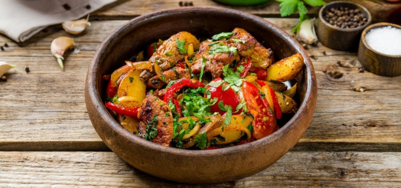

приготовление:
-
Заранее, на ночь, замариновать 500 г куриного филе в аджике (нарезать кусочками примерно по 4–5 см).
-
Разогреть сковороду с растительным маслом и обжарить курицу до румяности и почти до готовности. Переложить мясо в тарелку.
-
Почистить 500–600 г картофеля, нарезать брусочками наподобие картофеля-фри (если картошка рассыпчатая, можно залить её кипятком на 5 минут). В той же сковороде обжарить картофель до готовности, затем переложить в миску.
-
Нарезать 200 г лука полукольцами, 300 г сладкого перца и 1 красный перец чили. На той же сковороде обжарить лук 2 минуты, затем добавить перцы и готовить около 5 минут на среднем огне, помешивая.
-
Мелко нарезать по 15 г кинзы, 15 г зеленого лука и 15 г базилика.
-
Собрать блюдо: к овощам добавить картофель, курицу, 3/4 зелени и выдавить 5 зубчиков чеснока. Посыпать 1 ч.л. соли, 1 ч.л. хмели-сунели, 1 ч.л. сладкой паприки, 1 ч.л. молотого кориандра и 0,5 ч. л. черного перца. Аккуратно перемешать, чтобы не повредить картофель. Накрыть крышкой и потомить 10 минут.
-
Подавать, посыпав оставшейся нарезанной зеленью.
-
Приятного ДЕГУСТАШВИЛИ :D